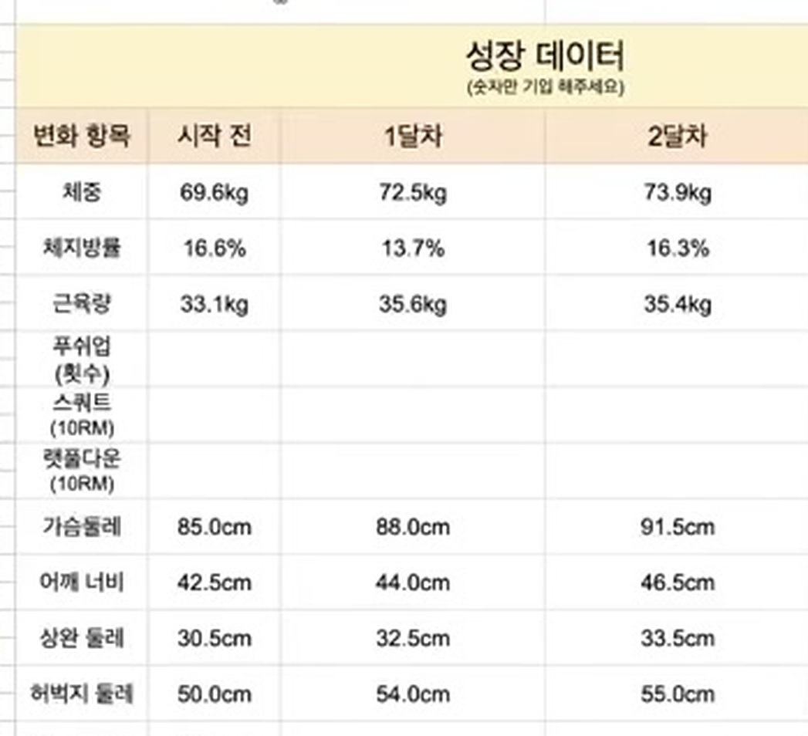

@bulk_farmer · 01
2달차에
근육량이 오히려
줄었습니다
12주 벌크업 기록을
잘 된 부분만 보여주지 않겠습니다.
멈췄을 때 무슨 일이 생기나 →
시작은 이랬습니다
체중
69.6kg
근육량
33.1kg
하루 섭취
1,565kcal
2년 동안 몸이 안 변한 분입니다.
본인은 많이 먹는다고 하셨습니다.
1달차 — 출발은 좋았습니다
체중
69.6
→
72.5kg
근육량
33.1
→
35.6kg
체지방률
16.6
→
13.7%
가슴둘레
85
→
88cm
한 달 만에 근육량 2.5kg.
여기까지는 교과서대로였습니다.
2달차 — 숫자가 뒤로 갔습니다
근육량
35.6
→
35.4kg
체지방률
13.7
→
16.3%
근육량은 줄고 체지방률은 올랐습니다.
한 달을 똑같이 했는데요.
그날 실제 기록입니다

숨기지 않고 그대로 적었습니다.
기록은 좋을 때만 남기는 게 아닙니다.
2차 중간 점검 · 성장 데이터
그런데 둘레는
계속 늘고 있었습니다
가슴둘레
88
→
91.5cm
어깨너비
44
→
46.5cm
상완둘레
32.5
→
33.5cm
같은 한 달입니다.
인바디는 뒤로 갔는데 몸은 커졌습니다.
그래서 줄자를
같이 씁니다
한 가지 지표만 보면
잘 가고 있는데도 그만두게 됩니다.
대부분 이 지점에서 포기합니다
3달차 — 다시 뚫렸습니다
시작
1달
2달
3달
체중
69.6
72.5
73.9
76.2
근육량
33.1
35.6
35.4
36.8
가슴둘레
85
88
91.5
95
어깨너비
42.5
44
46.5
48
허벅지
50
54
55
57
2달차에 멈추지 않았기 때문에
3달차 숫자가 나왔습니다.
@bulk_farmer · 09
멈춘 것처럼 보일 때
그만두지 않는 것
1:1 벌크업 코칭 문의
프로필 링크를 확인해주세요
@bulk_farmer
본 사례는 개인의 결과이며 개인에 따라 결과가 다를 수 있습니다